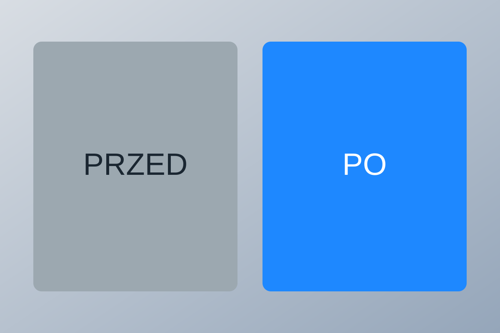

Podjazd z kostki — Legnica
Usunięcie mchu i zabrudzeń z powierzchni użytkowej.
Portfolio
Tu znajdziesz przykłady efektów przed i po czyszczeniu.

Usunięcie mchu i zabrudzeń z powierzchni użytkowej.
Odświeżenie koloru nawierzchni i fug.
Usunięcie osadu i nalotu biologicznego.
Dokładne czyszczenie stopni i obrzeży.
Usunięcie brudu po sezonie jesiennym.
Kompleksowe mycie i odświeżenie powierzchni.
Wyślij zdjęcie i zapytaj o wycenę — szybko wrócimy z odpowiedzią.